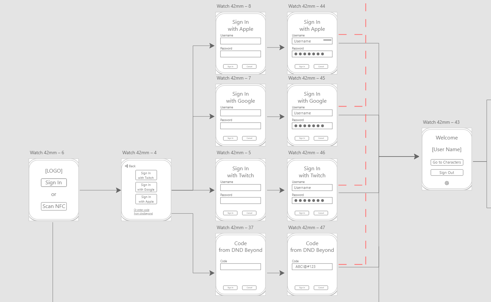

D&D Hit Points

This was a project for one of my classes, called Responsive Multi Device Design (RMDD). During this project, the focus laid on the ability to make an interactive experience, with designing the solution for multiple devices.
Points of interest for this project were to think about the context of the user, consistency of the design across devices, and thinking about what information needed to be displayed and in what way.
The assignment was to come up with and design a multi-device experience for a specific activity (such as traveling, fitness, going to the movies, playing games, etc.). One of the key points to think about where the user goals, that were important before, during and after the activity, and what device would be appropriate for that occasion.
The solution needed to be visualized in a screenflow, so that the functionalities of the product would be clearly explained and visible across all used devices.
Process
Start
I started with thinking about what kind of activity I wanted to make this project for. I had bit of a struggle with this, because I didn't want to do something that had been done a lot before, and what interested me. I first thought of something with plants or crystals, seeing those are two of my hobbies, but after a bit of brainstorming, I thought of something that I would have liked to exist.
I, like you might have noticed, am a huge Dungeons & Dragons enthousiast, and that is also the reason why quite a few of my projects have something to do with this wonderful hobby. When I'm playing D&D myself, I notice that sometimes I struggle when I'm deeply in combat or roleplay, to pay attention to everything. Especially if my character takes any damage, but for example I was figuring out my next turn in combat, I had to break from those plans to fill in my damage taken in the Hit Points area.
This would get a bit frustrating and time consuming after a while, and this is where I thought of my concept. D&D Hit Points connects your smartwatch to your D&D Beyond Account, letting you set your damage or healing with a simple gesture around your wrist, letting you keep focus for the rest of the game.
Design & Functionalities
I started making the designs by working out the wireframes and the screenflow of the user experience. First up, the laptop designs. I knew I wanted it to connect to an existing d&d tool and website called D&D Beyond. I've replicated this website ones during one of my other projects, but this project is an addition to this tool.
Because I knew that I wanted to add to an already existing website, making the laptop designs was very easy and fast to do. I made rough wireframes of the existing designs of a charactersheet page, and added on top of that. Mainly, adding the buttons and ways to connect to your smartwatch. After that, I made a Hi-Fi screenflow how it would work, and how potential error states would look like.
When I was done with the laptop designs, I tried to translate the most important parts the character sheet into the smartwatch app. I noted down the things that I needed to have or be able to do in the app, and what could be left for the laptop or other device versions. After all that, I came with a few things that needed to be included in the app: being able to connect to your D&D Beyond account, selecting (one of) your character(s), showing your Hit Points and a way to edit them, Death Saving Throws, and Conditions (being blinded, stunned, poisoned, etc.).
These functionalities needed to be a part of the designs, and I slowly started to expand the design. First, just like before, I made wireframes for the smartwatch designs, to see the placement and sizing of the content. After, I converted those wireframes into a Hi-Fi screenflow. I did have some iterations for the designs though, those will be shown below.